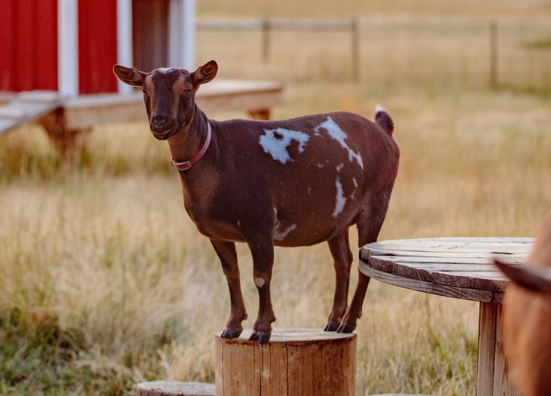

Six years ago, we traded the city for 20 acres in North Idaho. What started as a simple desire for “elbow room” quickly escalated into a crash course in small scale farming — moving from a garden to chickens, then pigs, and eventually… well, an ever-growing number of goats.
Our land was farmed conventionally for years, which left the soil overused and plain worn out. Since neither of us have any formal farming background, we are experimenting and learning as we go. It’s a bit like throwing darts at a dartboard, but thankfully some of those darts are starting to stick.
Our focus is on natural, chemical-free methods that hopefully will help the soil recover. It’s a slow process, but we’re encouraged as we see small improvements each year.
